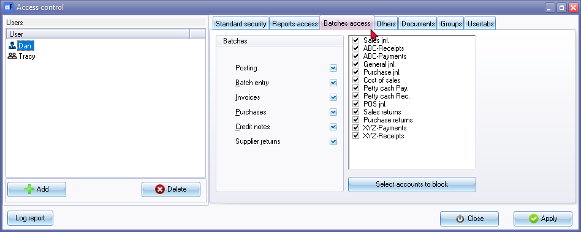
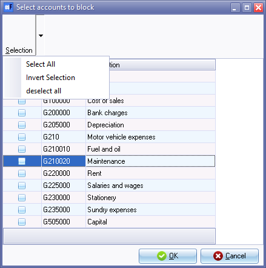

Access control - Batches access tab
The Batches access tab in the Access control feature of osFinancials allows you to manage user access to accounts and posting of transactions in batches and updating document transaction to the ledger.
The key features on the Batches access tab to control access to specific functions, is as follows:
- Default account access: By default, all users have access to all accounts in the Set of Books. This includes General ledger accounts (Income and Expense Accounts, Capital, Assets, and Liabilities Accounts), Bank accounts, Tax accounts, Debtor accounts, and Creditor accounts.
- Blocking specific accounts: To restrict or block access to specific accounts for a user, access the Batches access tab and you will see a list of all accounts in the Set of Books. Simply deselect (remove the tick) from each account that you wish to block access for that user. Once blocked, the user will not be able to process any transactions involving the blocked or restricted accounts.
- Blocking access to specific batches: You may restrict a user to specific batches (journals) For example, if you have a Petty Cashier, you can allow them access to only the Petty cash payments journal. This means they will only be able to process transactions within the Petty cash payments journal and won't have access to other journals or batch types to process transactions.
- Posting batches and updating documents: In addition to account access, the Batches access tab allows you to control user access to posting batches and updating documents to the ledger. If you allow a user to enter transactions in batches (journals), you can restrict their access to processing transactions in specific batches. This means they can only work with specific journals or transaction types based on their assigned permissions.
- Creating and editing documents: You can also allow or restrict a user from creating and editing various types of documents, including Invoices, Purchases, Credit notes, and Supplier returns. By setting the appropriate permissions, you can control which documents the user is allowed to create and modify.
By using the Batches access tab, you can finely tune user permissions, limiting access to specific accounts and transaction functions within osFinancials. This helps maintain control over financial transactions, ensuring that users can only work with authorized accounts and perform designated tasks based on their assigned roles and responsibilities.
To set the batches access options for an user:
- On the Setup ribbon, click on the Setup → Access control menu. Then, navigate to the Batches access tab.

- Selecting the user: Ensure that the correct user is selected for whom you want to restrict or allow access to batches, accounts, and processing options. If needed, click on the User icon to select the desired user.
- Configuring batches access: To restrict the selected user from accessing and processing transactions using specific journals (batch types), remove the tick in the respective field. To allow access to specific journals (batch types), place a tick in the field.
|
|
You can use the Spacebar on your keyboard to select or deselect an option. |

- Blocking specific accounts: By default, all users have access to all accounts in the Set of Books. To restrict or block access to specific accounts for a user, click on the Select accounts to block button. This will open the "Select accounts to block" screen, where you can see a list of all accounts in the Set of Books. Deselect (remove the tick) from each account that you wish to block access for that user. Once blocked, the user will not be able to process any transactions involving the blocked or restricted accounts.

|
|
You may press the Spacebar on your keyboard to select or deselect an option. |
|
|
Remember to click OK on the "Select accounts to block" screen to save your selection. |

- Posting: In addition to account access and batches access, the Batches access tab allows you to control user access to posting batches and updating documents to the ledger. If you allow a user to enter and edit transactions in batches (journals), you can restrict their access to posting transactions in batches. This means the Post option on the "Batch entry" screen will be inactive. Users will also have the option to create and edit transactions in batches (journals). Restricted users with the "Posting" option, will also have the option to create and edit various sales documents (such as invoices and credit notes) and purchase documents (such as purchases and supplier returns). However, the Update button on the "Update documents" screen will be inactive. This allows you to control which users is allowed or restricted to updating documents to the ledger.
- Creating and editing documents: You can also allow or restrict a user from creating and editing various types of documents, including Invoices, Purchases, Credit notes, and Supplier returns. By setting the appropriate permissions, you can control which documents the user is allowed to create and modify.
- Applying changes: Click on the Apply button to save the changes for the selected user.
- Setting access levels for other users: If necessary, select the next available user and configure their batches access and account restrictions in the same manner.
- Finalizing changes: Once you have finished setting the access levels for all desired users, click on the Close button to exit the "Access control" screen.
|
|
If a user attempts to access a batch type or journal type for which access has been disabled in osFinancials, they will receive a warning message indicating the restriction. The message will typically state: "User cannot use this batch! Enable access in Setup → Access control" To proceed, the user should click on the OK button. If they had selected an incorrect batch, they should select the appropriate batch (journal) instead. If the restriction persists or they believe access should be granted, they should contact their System Administrator or the person responsible for managing access control settings. The System Administrator can then review and modify the access control configuration to allow the user access to the desired batch type or journal type. |